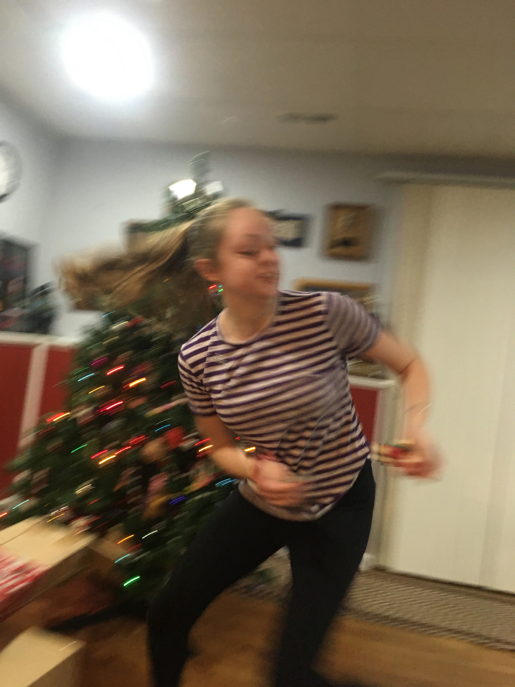
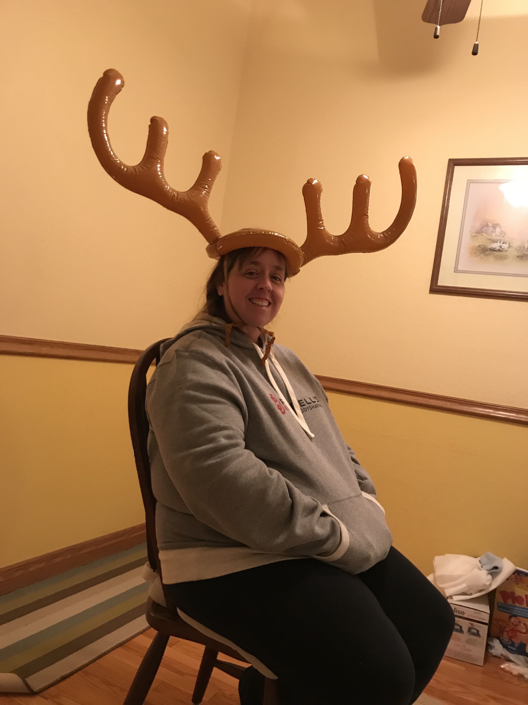
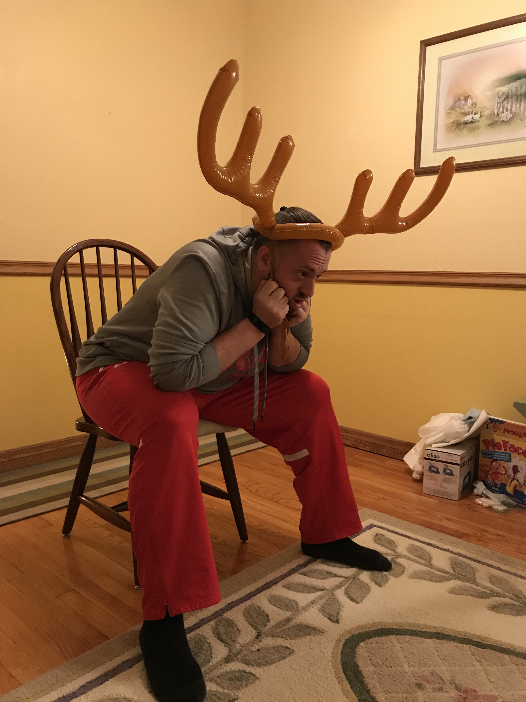

We tried to have Xeno draw names from a container, but failed, so Eddie drew them.
J.D. left his game at the checkout counter at WalMart, so he designated Eddie for a substitute game. Four solo cups and eight pencils were setup for each team. Everybody attempts to bounce the two pencils (one at a time) into their assigned cup, similar to here, but in a relay fashion, one team member at a time. Uncle Giant lead with the first pencil in, but Grammy answered back quickly. Unfortunately for team Turkey Tossers, that's all they got. The Turkey Catchers won after the Monsters conceded. Eddie got one, J.D. got one, Uncle Giant got both, and Grammy got one.
Captain's game was broken when he went to buy it, even though we went to multiple stores; so not having one he went with Grammy's classic I Spy Christmas Tree.
The Turkey Catchers succeeded again, their total time was 15 minutes, 19 seconds to the Turkey Monster's 16 minutes, 13 seconds.
In this game, one from each team try flipping solo cups to get them to land upside down. When that happens, the player gets to place it on a tic-tac-toe board. First player to get a tic-tac-toe wins. The Turkey Tossers got off to a good start with Chad beating Eddie and Lorelei beating J.D. Captain thrawted Uncle Giant once, but it wasn't enough and the Turley Catchers got a game. Grammy pulled a magnificent win against Cat! Turkey Tossers get on the board.
In this game, Cat had blow-up antlers and rings. Each person on each team tossed four rings and tried to catch four rings, twice. The Turkey Catchers won with 6-2.
Not played.
{kind=link}
{kind=link}
{kind=link}